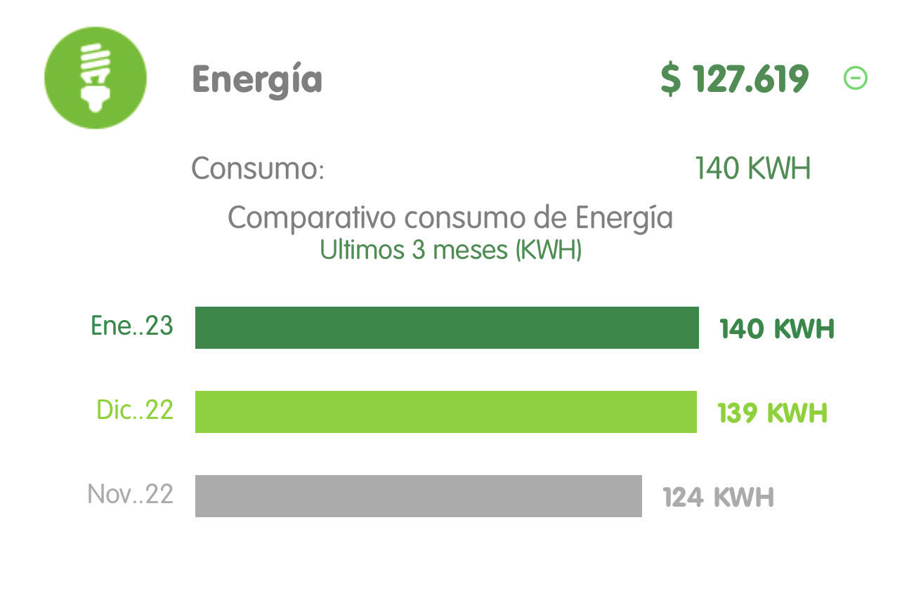
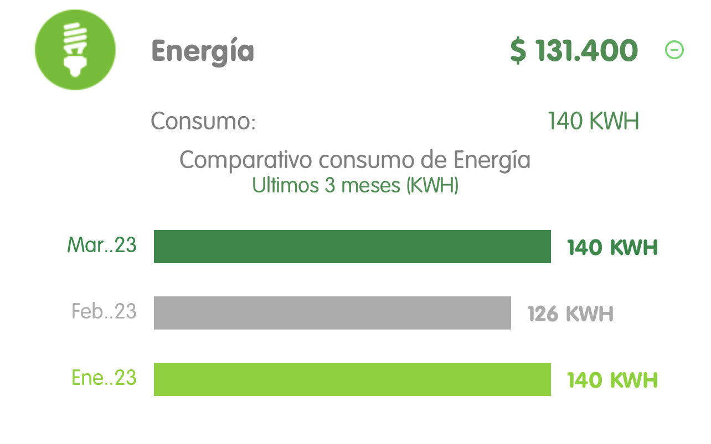

By:Sofia Marin Gomez
 This second part of the project must be done individual. For each plot, you must show evidence about your bill house public services to proof that your information is true.
According to the collected data from the plot, explain why the graphic displays that behavior in terms of:
In this graph it is possible to show an increase in the level of energy used in my house
The red dots indicate the exact number of energy expenditures in my house and the sequence of gray dots helps me to identify the linear regression, which is used to predict the value of a variable according to the value of another variable.
$$ y = 1.90\cdot 6 + 128.10 $$ $$ = 139.5$$
in conclusion I feel that in my house we should start practicing ways of energy reduction for example: Unplugging devices that are not in use, Reducing the use of electrical appliances, Choosing more energy efficient appliances, Remembering to turn off lights, etc. this would help to lower consumption statistics.
According to the collected data from the plot, explain why the graphic displays that behavior in terms of:
Within the surveyed colleagues it can be identified that although they have different statistics and number of residents of consumption, it continues to generate an increase in energy expenditure.
The red dots indicate the exact number of energy expenditures at the respondents' properties and the sequence of gray dots helps me to identify the linear regression used to predict the value of one variable based on the value of another variable. another variable.
$$ y = 51.63\cdot 200 + -29.50 $$ $$ = 10296.5 $$
A conclusion about your own interpretation on why is given that relation between these two variables.